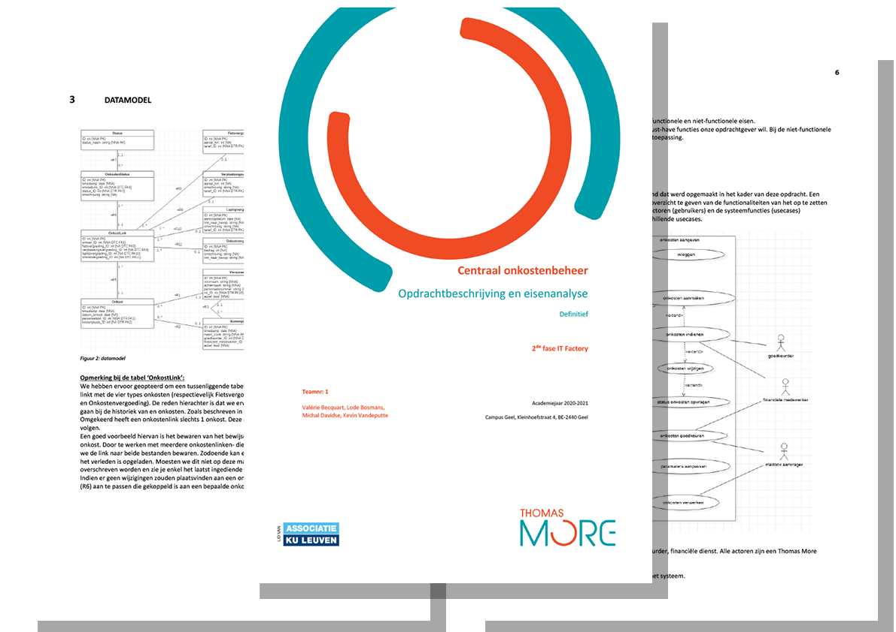

Stressvrij onkosten opvolgen.
In het tweede jaar van de opleiding werd in groep een applicatie ontwikkeld voor een 'fictieve' klant. Dit kaderde in de vakken 'Requirements Analysis' en 'Project PHP'.
De opdrachtgever was een docent van Thomas More die ons een probleem voorschotelde waarvoor wij een oplossing diende te bedenken. Het probleem was het opvolgen van onkosten binnen Thomas More. Deze werden allemaal op papier gedeclareerd en er was geen makkelijke mogelijkheid om deze op te volgen. De doelstelling van het project was het faciliteren van de aanvrager die zijn/haar onkosten binnenbrengt.
| Team: | Kevin Vandeputte, Lode Bosmans, Michal Davidse, Valerie Becquart |
| Technologie: | Laravel, Vagrant, Homestead |
| Looptijd: | Tweede en vierde kwartaal academiejaar 2020-2021 |
In de conceptfase lag de focus op het capteren van de noden en de wensen van de klant. Hier leerde ik het belang van de functionele en de niet-functionele analyse en de noodzaak om hier voldoende tijd aan te spenderen.
Het resultaat van de conceptfase was een analyserapport waarin de functionele en niet-functionele eisen werden besproken en gedocumenteerd. Ook het datamodel en het use-case diagram werden uitgewerkt en werd er een low-level mock-up opgemaakt.
De eisenanalyse die opgemaakt was in het tweede kwartaal was de leidraad voor het ontwikkelingsproces. In deze fase leerde ik in team werken tijdens een ontwikkelingsproces. Git werd een tweede natuur en wekelijks werd er een sprint meeting gehouden om de voortgang en knelpunten te detecteren. Ik was verantwoordelijk voor het ontwikkelen van het dashboard en ook de adminfunctionaliteit werkte ik uit.
Tijdens de conceptfase waren er verschillende contactmomenten met de klant om de noden en wensen te leren begrijpen. Ik leerde hier hoe de hoofdzaak van bijzaak te scheiden en me niet te verliezen in onnodige details. Als team hadden we een duidelijke rolverdeling zodat de klant een 'single point of contact' had.
Tijdens het ontwikkelproces waren er na iedere sprint meetings met de klant om de voortgang te bespreken en te tonen. Hierin werd het belang van korte ontwikkelcyclussen duidelijk. Dit liet ons toe kort op de bal te spelen en kon er tijdig bijgestuurd worden zonder de timing van het project in gevaar te brengen.
| Rapport eisenanalyse: | Open analyse- en ontwerprapport |
| Project link: | https://project.oho1.be |
| Gebruikersgegevens: | email: testuser@oho1.be wachtwoord: user1234 |